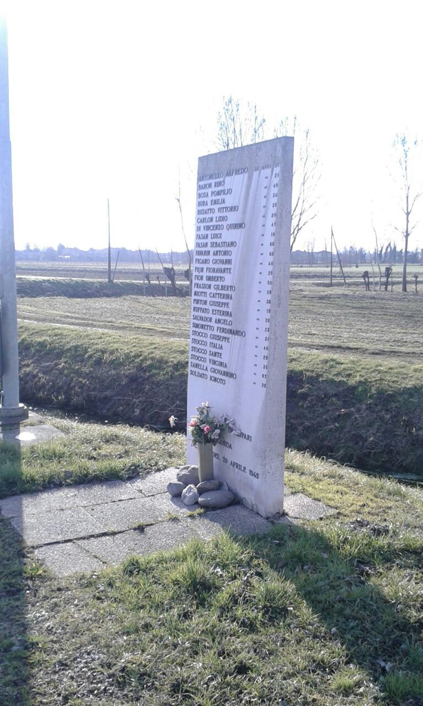

A San Martino di Lupari, in località Maglio –situata tra Abbazia Pisani e Borghetto– il 29 aprile 1945 i tedeschi colpirono il comando del Battaglione partigiano "Pegorin", causando diversi morti tra i partigiani e tra i civili e incendiando abitazioni. Quella in zona Maglio, fu probabilmente un'azione punitiva anti-partigiana. La sede del comando del battaglione Pegorin è annidata in zona Maglio. La divisione Falk entra in casa Fasan, uccidendo Sebastiano e tra gli altri caduti non ha scampo nemmeno Luigi, il nipote diciassettenne. Molti abitanti della frazione e delle famiglie circostanti cadono durante la rappresaglia: la famiglia Stocco viene distrutta con la perdita di Virginio e dei suoi figli. Alcune case vengono incendiate con lanciafiamme e panzerfaust e le persone lasciate morire o barbaramente uccise, anche se già ferite.

Quest'opera è stata eretta nel 1945 per ricordare i trucidati del Maglio e delle case vicine durante gli avvenimenti avvenuti il 29 aprile. Nella stele, che ha forma di parallelepipedo rettangolare, sono incisi, in ordine alfabetico, ventiquattro nomi di giovani e di adulti, con a fianco di ognuno l’età al momento della loro morte.